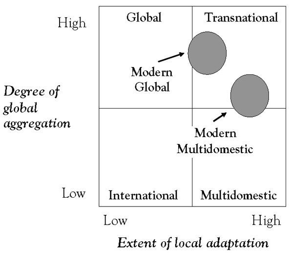

Organizational design should be about developing and implementing corporate strategy. In a global context, the balance between local and central authority for key decisions is one of the most important parameters in a company’s organizational design. Companies that have partially or fully globalized their operations have typically migrated to one of four organizational structures: (a) an international, (b) a multidomestic, (c) a global, or (d) a so-called transnational structure. Each occupies a well-defined position in the global aggregation or local adaptation matrix first developed by Bartlett and Ghoshal and usefully describes the most salient characteristics of each of these different organizational structures (Figure 10.1 "Global Aggregation/Local Adaptation Matrix").This section draws substantially on Aboy (2009).See, for example, Bartlett and Ghoshal (1987a, 1987b, 1988, 1992, 2000).
The international modelCharacterizes firms that are strongly dependent on their domestic sales and that export opportunistically. characterizes companies that are strongly dependent on their domestic sales and that export opportunistically. International companies typically have a well-developed domestic infrastructure and additional capacity to sell internationally. As their globalization develops further, they are destined to evolving into multidomestic, global, or transnational companies. The international model is fairly unsophisticated, unsustainable if the company further globalizes, and is therefore usually transitory in nature. In the short term, this organizational form may be viable in certain situations where the need for localization and local responsiveness is very low (i.e., the domestic value proposition can be marketed internationally with very minor adaptations) and the economies of aggregation (i.e., global standardization) are also low.
Figure 10.1 Global Aggregation/Local Adaptation Matrix
The multidomestic organizational modelDescribes firms with a portfolio of independent subsidiaries operating in different countries as a decentralized federation of assets and responsibilities under a common corporate name. describes companies with a portfolio of independent subsidiaries operating in different countries as a decentralized federation of assets and responsibilities under a common corporate name.Bartlett and Ghoshal (1987a, 1987b). Companies operating with a multidomestic model typically employ country-specific strategies with little international coordination or knowledge transfer from the center headquarters. Key decisions about strategy, resource allocation, decision making, knowledge generation and transfer, and procurement reside with each country subsidiary, with little value added from the center (headquarters). The pure multidomestic organizational structure is positioned as high on local adaptation and low on global aggregation (integration). Like the international model, the traditional multidomestic organizational structure is not well suited to a global competitive environment in which standardization, global integration, and economies of scale and scope are critical. However, this model is still viable in situations where local responsiveness, local differentiation, and local adaptation are critical, while the opportunities for efficient production, global knowledge transfer, economies of scale, and economies of scope are minimal. As with the international model, the pure multidomestic company often represents a transitory organizational structure. An example of this structure and its limitations is provided by Philips during the last 25 years of the last century. In head-to-head competition with its principal rival, Matsushita, Philips’ multidomestic organizational model became a competitive disadvantage against Matsushita’s centralized (global) organizational structure.
The traditional global companyA firm with globally integrated operations designed to take maximum advantage of economies of scale and scope by following a strategy of standardization and efficient production. is the antithesis of the traditional multidomestic company. It describes companies with globally integrated operations designed to take maximum advantage of economies of scale and scope by following a strategy of standardization and efficient production.See, for example, G. S. Yip (1981, 1982a, 1982b, 1989, 1991a, 1991b, 1994, 1996, 1997); Yip and Madsen (1996). By globalizing operations and competing in global markets, these companies seek to reduce cost of research and development (R&D), manufacturing, production, procurement, and inventory; improve quality by reducing variance; enhance customer preference through global products and brands; and obtain competitive leverage. Most, if not all, key strategic decisions—about corporate strategy, resource allocation, and knowledge generation and transfer—are made at corporate headquarters. In the global aggregation-local adaptation matrix, the pure global company occupies the position of extreme global aggregation (integration) and low local adaptation (localization). An example of a pure global structure is provided by the aforementioned Japanese company Matsushita in the latter half of the last century. Since a pure global structure also represents an (extreme) ideal, it frequently is also transitory.
The transnational modelCharacterizes firms that attempt to simultaneously achieve high global integration and high local responsiveness. is used to characterize companies that attempt to simultaneously achieve high global integration and high local responsiveness. It was conceived as a theoretical construct to mitigate the limitations of the pure multidomestic and global structures and occupies the fourth cell in the aggregation-adaptation matrix. This organizational structure focuses on integration, combination, multiplication of resources and capabilities, and managing assets and core competencies as a network of alliances as opposed to relying on functional or geographical division. Its essence, therefore, is matrix management. The ultimate objective is to have access and make effective and efficient use of all the resources the company has at its disposal globally, including both global and local knowledge. As a consequence, it requires management-intensive processes and is extremely hard to implement in its pure form. It is as much a mind-set, idea, or ideal rather than an organization structure found in many global corporations.Ohmae (2006).
Given the limitations of each of the above structures in terms of either their global competitiveness or their implementability, many companies have settled on matrix-like organizational structures that are more easily managed than the pure transnational model but that still target the simultaneous pursuit of global integration and local responsiveness. Two of these have been labeled the modern multidomestic and modern global models of global organization.Aboy (2009), p. 3
The modern multidomestic modelA matrix structure with a strong culture of operational decentralization, local adaptation, product differentiation, and local responsiveness. is an updated version of the traditional (pure) multidomestic model that includes a more significant role for the corporate headquarters. Accordingly, its essence no longer consists of a loose confederation of assets, but rather a matrix structure with a strong culture of operational decentralization, local adaptation, product differentiation, and local responsiveness. The resulting model, with national subsidiaries with significant autonomy, a strong geographical dimension, and empowered country managers allows companies to maintain their local responsiveness and their ability to differentiate and adapt to local environments. At the same time, in the modern multidomestic model, the center is critical to enhancing competitive strength. Whereas the primary role of the subsidiary is to be locally responsive, the role of the center is multidimensional; it must foster global integration by (a) developing global corporate and competitive strategies, and (b) playing a significant role in resource allocation, selection of markets, developing strategic analysis, mergers and acquisitions, decisions regarding R&D and technology matters, eliminating duplication of capital intensive assets, and knowledge transfer. An example of a modern multidomestic company is Nestlé.
The modern global companyCharacterized by a high level of global integration due to low-cost sourcing opportunities, factor cost efficiencies, global scale and scope, product standardization, globalized technology sharing and information technology services, global branding, and a global corporate strategy. is rooted in the tradition of the traditional (pure) global form but gives a more significant role in decision making to the country subsidiaries. Headquarters targets a high level of global integration by creating low-cost sourcing opportunities, factor cost efficiencies, opportunities for global scale and scope, product standardization, global technology sharing and information technology (IT) services, global branding, and an overarching global corporate strategy. But unlike the traditional (pure) global model, the modern global structure makes more effective use of the subsidiaries in order to encourage local responsiveness. As traditional global firms evolve into modern global enterprises, they tend to focus more on strategic coordination and integration of core competencies worldwide, and protecting home country control becomes less important. Modern global corporations may disperse R&D, manufacture and production, and marketing around the globe. This helps ensure flexibility in the face of changing factor costs for labor, raw materials, exchange rates, as well as hiring talent worldwide. P&G is an example of a modern global company.